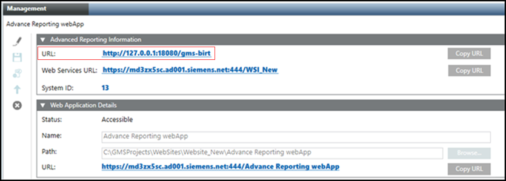

Create an Advanced Reporting Web Application
You need to create the Advanced Reporting web application to work with Advanced Reporting.
- The Web Services Application is created in SMC.
- In the SMC tree, navigate to Websites > [website] where you want to create a web application.
- Click Create Advanced Reporting Application
 .
. - In the Advanced Reporting Information expander, do the following:
a. Set the correct Tomcat port in the default URL: http://127.0.0.1:18080/gms-birt.
b. From the drop-down list, select the appropriate Web Services URL. The Web Services URL is listed in the drop-down list only if it is present under the same website. If the URL is not present, manually enter the URL in the following format, https://[hostname]:[port]/[application name].
NOTE: In the Web Services URL, if the domain name has Underscore character (_), then on the execution of Pharma and Trend Calculation reports and settings, an error message NO access to view this report is displayed. For more information about NO access to view this report error message, see topic Cause 4 and Solution 4 in No Access to View Reports.
c. Enter the System ID of your project. If the System ID is changed in the Server Project Information expander in the Project Settings tab, update the ID manually in the Advanced Reporting Information expander as it will not be automatically updated.
NOTE: - When upgrading an Advanced Reporting web application from V5.0 to any higher version, ensure the following:
The Advanced Reporting web application requires you to specify the Web Services URL and System ID. In this case, update the existing Advanced Reporting web application by clicking Edit and specify the value for Web Services URL and System ID and Save.
and specify the value for Web Services URL and System ID and Save. - In case of upgrading the Advanced Reporting web application to V7.0 from any version, need to regenerate the cache. For more information, see Generate Cache.
Regeneration of cache is mandatory as Tomcat major version is upgraded (from V9.x to V10.x). - If any energy reports are configured in your project and if the web services URL that you have set using the Advanced Reporting web application is different than the URL that is configured on the Advanced Reporting configuration page, then you must regenerate the cache. If you do not want to regenerate the cache, then do not update the Advanced Reporting web application for the particular project.
- In the Web Application Details expander, type a unique name for the web application.
- Click Save
 .
. - A confirmation message displays.
- Click OK.
- The data is validated and, on successful creation, the following occurs:
- A new Advanced Reporting web application node is created and selected by default.
- A read-only URL for Tomcat Server http://127.0.0.1:18080/gms-birt displays in the Advanced Reporting Information expander. 5,
- A read-only https URL for Advanced Reporting web application
https://[Fully qualified host name of the Tomcat server]:[Port Number]/[Advanced Reporting web application name] displays in the Web Application Details expander.
